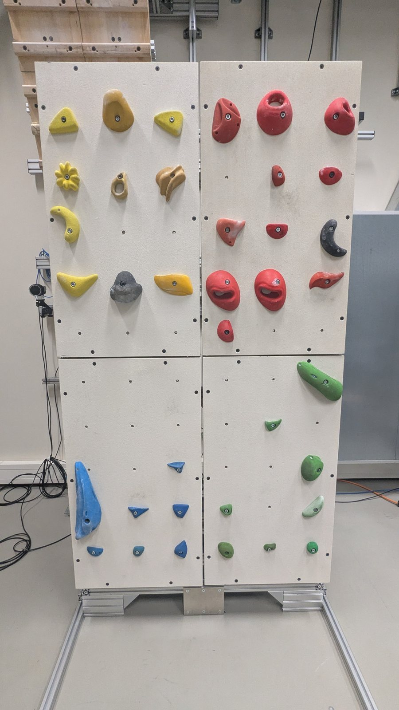

In submission · 2026
PACT
End-to-End Learning of Human Pose, Contacts, and Forces from Video
- 1MBZUAI
- 2Sensory-Motor Systems Lab, ETH Zürich
- 3EPFL
TL;DR
PACT turns a single video into world-space 3D motion, hand and foot contacts, and the forces at those contacts, in one end-to-end model. No motion capture, no force plates, no staged pipeline.
Overview
Abstract
Human motion, environmental contacts, and interaction forces are governed by common physical laws, yet existing approaches typically separate visual pose reconstruction from contact and force estimation. This separation limits joint reasoning and can propagate errors between stages. We introduce PACT, an end-to-end model that jointly learns to estimate human pose, contacts and contact forces from monocular video. Our approach augments a human reconstruction foundation model with learnable contact-force tokens and a temporal transformer that integrates visual features with world-space motion. Joint prediction heads refine human poses and estimate contacts and forces, while physics-based supervision encourages consistency between the reconstructed motion and interaction forces. To address the scarcity of force annotations, we develop a data annotation pipeline that combines contact labeling with physics-based motion and force optimization, producing training supervision from synthetic and real-world videos. We also introduce a real-world climbing benchmark ForceWall with climbing videos and corresponding ground-truth contact forces obtained from the force sensors. Experiments demonstrate state-of-the-art contact and force estimation, outperforming staged reconstruction approaches and generalizing to interactions beyond the training distribution. These results support end-to-end joint learning as an effective approach to recovering human motion and physical interactions from video.
Video
PACT in motion
A narrated walkthrough of the motivation, the model, the labeling pipeline, and results.
Method
From stages to end-to-end
Existing methods estimate pose, contacts, and forces in separate stages, so errors in one stage propagate to the next. PACT learns all three jointly, end to end, from a single video.

Architecture
- PACT builds on the SAM 3D Body backbone, kept frozen.
- Learnable contact-force tokens capture interaction cues in every frame.
- Camera motion lifts the pose into world space, and a temporal transformer reasons over time.
- Heads refine the pose and predict gravity, contacts, and forces, with a physics loss tying motion and forces together.

Annotation pipeline
- Force labels are scarce, so we built a physics-based labeling pipeline.
- Foundation models recover the person, the scene, and the camera; an optimization solves for physically consistent motion, contacts, and forces.
- We use it to label synthetic BEDLAM2 videos and real climbing videos from the web.
- These labels are imperfect, with noisy forces and forces on limbs that touch nothing. Learning from many of them, PACT becomes more robust than its own teacher.

Benchmark
ForceWall
Our instrumented climbing wall, whose holds measure the force applied by every limb. Paired with video, it gives a real-world benchmark with ground-truth contact forces for climbing.
Results
From a single video to physics
Every clip below is predicted by PACT from a single monocular video. Force arrows are drawn in yellow.
Climbing in world space
The input video, the reconstruction seen from the camera, and a side view of the same motion in world space.
Input vs PACT
The same clip with identical timing. Switch between the raw input and the predicted pose, contacts, and forces.
Beyond climbing
Interactions outside the training distribution. Input on the left, world-space side view on the right.
Contacts and forces on the input video
Predictions drawn directly over the input footage.
Citation
BibTeX
@article{akizhanov2026pact,
title = {PACT: End-to-End Learning of Human Pose, Contacts, and Forces from Video},
author = {Akizhanov, Rikhat and Zhang, Yangsong and Kaliazin, Nikolai and
Wolf, Peter and Nakamura, Yoshihiko and Fua, Pascal and
Pizzati, Fabio and Laptev, Ivan},
journal = {arXiv preprint},
year = {2026}
}